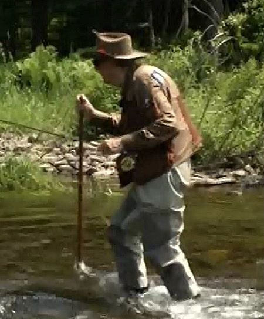
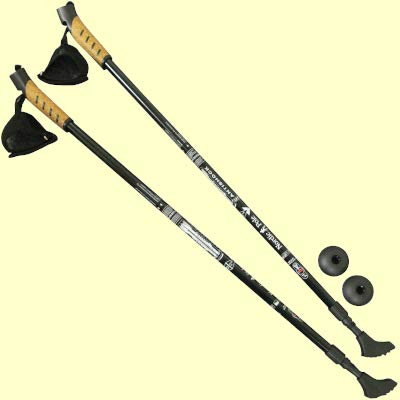
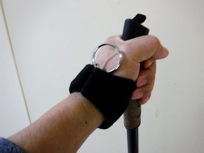
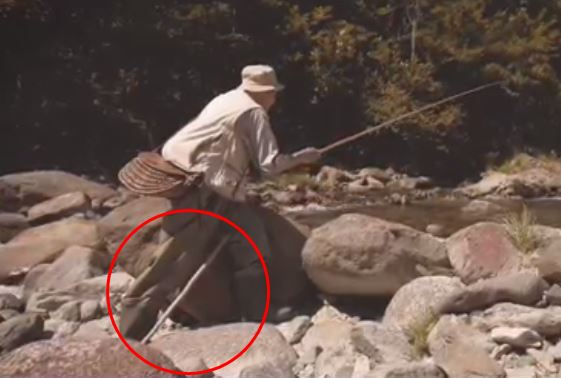

ティップス
釣りの最中に ウェーディングスタッフ（渓流遡行、渡渉用の杖）
「釣り人が握る竿は、生きてゆくために、愚かな人間がすがるための杖である──。」
この言葉は、釣り好きで知られる作家、夢枕獏さんの「五大陸釣魚紀行 愚か者の杖」という本の中にある一節である。アマゾンの内容紹介には、
稀代の釣り好きである作家・夢枕獏が、フィールド・カメラマン・佐藤秀明とともに世界の猛魚・海魚を追って五大陸を東奔西走！ 思わず釣りに行きたくなるフォト＆エッセイの名著
とある。
僕も最近、押し寄せる年波のせいで川歩きがおぼつかなくなってきて、やたらと転ぶようになってきた。イワナ狙いの小渓流なら良いのだが、2019年の秋より病みつきになった本流下流域でのニゴイ釣りでは、渡渉時に不安と危険を感じてしまう。そこで、愚か者の杖としての釣り竿はすでに持っているので、転ばぬ先の杖として、ウェーディングスタッフを携行することにした。
ニュージーランド北島でお世話になったガイドさんによれば、
- アメリカから来るアングラーがよく持っている、釣り具メーカーのウェーディングスタッフは、とてもコンパクトに折り畳めて、見かけは洒落ているが実用的でない。
- 強度不足で、体重が掛かった時、折りたたみ部分から折れることがある。
- 強力なゴムなどを用いた伸展機構が年を経て劣化する。
- 長さ1.6mほどの丈夫な木の棒にストラップを付けた単純な杖が１番良い！
という、長年の経験からの貴重なアドバイスをいただいた。そんな時、衛星放送のフィッシング・カフェという番組を見ていたら、フライフィッシングが盛んなアメリカ・キャッツキル地方の、ベテランフライフィッシャーマン：クリム・フラートン氏が、長い１本棒のウェーディングスタッフを、ストラップで背中に掛けて遡行していたのを見た。イメージとしては、富士登山の人たちや、お遍路さんたちが持つ白く長い杖のようである。上流へ向いての釣りなので、釣っている最中は、ウェーディングスタッフは水面に垂らして後方に浮かせてあるので、キャストの邪魔にはならないように思えた。

画像引用：釣りビジョン「Fishing Cafe」 より
『ははぁ.....なるほど！ やはりあの北島のガイドさんの言っていたことは正しかったのだ。』
と、大いに納得し、さっそく自作を検討した。ホームセンターで材料を物色してみたが、
- 長さ1.6m、直径20mmほどの木製の棒が結構な値段だった。その上けっこう重い。
- 木製の棒だと防水塗装も必要
- その他の素材は、軽いと折れそう、丈夫だと重い。
- ストラップも購入か自作する必要あり。
そこで、財政難の僕は、数年前にホームセンターで見つけて買ってあった、トレッキングポールを代用することに決めた。Aussie Nordic Pole ANTICHOCK という製品で、２ピースのテレスコピックタイプである。当時 2,600円ほどだったと思う。

画像はアマゾンより引用
材質は、シャフト:アルミ、グリップ:PP/コルク、バスケット:PVC、ラバーキャップ:PVC とのことである。ただし、2020/02現在、アマゾンジャパンでは取り扱いが無いとのことだった。
装着・携帯方法は、手首の部分に付いているストラップに金属製リングを通し、アルミ製小型カラビナで、チェストハイ・ウェーダーのベルトを通すためのループに装着している。１番短くしても仕舞寸法はやや長いが、竿を振り回したり、移動する時には、それほど邪魔にはならない。

銀色の金属製リングで腰に装着する。
良い点
- グリップに丈夫な黒いナイロン製ストラップが付いており、マジックテープで固定できるので、手を離しても落とすことが無い。
- グリップはコルク製なので、濡れても滑りにくい。
- 伸張・収納が手早く簡単にできる。仕舞寸法 86cmから最大145cm まで。
- スプリング内蔵で、ショック吸収機能がある。
- アルミ製シャフトで、比較的、重量が軽い。実測で１本あたり 310g ほど。
- 何と言っても安価！ ２本組で3,000円以下だった。
- 先端の部品を取り外すと、単純な金属製石突きになる。また、バスケットと呼ばれる直径 6cm ほどの円盤状の部品が付属しており、それを付ければ砂地では潜り込むことが減りそう。
- グリップ上端にごく小さなループ有り。
- 釣りの帰り道では、トレッキングポールとして便利に使える。老いた身には実にありがたい。（笑）
難点
- 仕舞寸法が長い。しかし、これは強度確保とのトレードオフ関係にあるので仕方が無い。１番短く縮めてから腰に付ければさほど邪魔にはならない。
- 最初のうちは、扱いに慣れていないので、かえって危なっかしい。杖の操作に気を取られ、足の運びがおろそかになる。慎重に渉ること。
- 杖を水中で動かして次のポイントへ移動させようとすると、水流で抵抗がかかり、結構な力が必要になる。いったん水面上に抜き上げてから、次の場所へ着き直すと良い。
2019年12月に始めて使ってみたが、流石に渡渉、遡行が安定してできた。最長まで伸ばせば十分に長い。釣り具メーカー製のウェーディングスタッフに比べ、強度は十分だと思える。
ふと、釣り具メーカー製のウェーディングスタッフはどんなものだろうと調べてみたら、ある製品は、カーボン素材のタイプが重量約 320g、ノーマルタイプはアルミ素材で重量約 410g ほどだった。寸法は、130?145cm ほどの幅で調整できる、とのことだった。
ところで、来たるべき2023年には、またしてもニュージーランド釣行を計画しているのだが、航空機への機内持ち込み、あるいは預け入れはどうなるのだろうか？ 老人の杖としてなら機内持ち込み可能なのか？（笑）
ちなみに、この記事の製品の同等品としては、La-VIE(ラヴィ) ウォーキング ノルディックポールというものがあるよう。ご参考まで。
追記： 先日、ニュージーランドの元フィッシングガイド、ブリントさんと電話で話していたら、ウェーディングスタッフ（杖）の先端は、ゴム製のキャップなどにしておかないと、石を突く音が水中を遠くまで伝わるので、狡猾な南島のブラウントラウトはすぐに逃げるぞ！ と笑っておりました。
また、今日掃除をした時に、古くなって放置されていたモップの柄を見つけました。おそらくアルミ製で、太さが約22mm、長さは130cmほどでしたので、下端に付いているモップを保持する金具を取り外し、ゴムのキャップを被せれれば、立派なウェーディングスタッフになるかもしれません。上端のグリップには、大きめの穴が空いていますので、丈夫な紐を使えば背中に掛けて移動できそうです。１本モノですので、市販の折りたたみ式よりはおそらく丈夫だと思います。
追記： 今日、本流の釣りで流れに立ち込んでキャストしていたら、腰に結わえたウェーディングスタッフが流れに押されて斜めになり、足下のランニングラインにまとわりつくことが数回ありました。次回は、装着金具を仕舞った状態の、上から1/3ほどの位置に固定して、ブラブラ長く垂れ下がらないようにしてみたいと思います。
渡渉時の強度は十分で、さすがに安心できました。
追記：久しぶりにテンカラ関連の動画を見ていたら、パタゴニア社のビデオクリップ「完全なる釣り人」に、ヨーロッパの老釣り師が紹介されており、その名人、アルトゥロ・フーニョ氏はやはり素朴な木の杖をついていました。

画像引用 パタゴニア社のビデオクリップ「完全なる釣り人」 より
ティップス 目次へ
サイトマップ
ホームへ
お問い合わせ